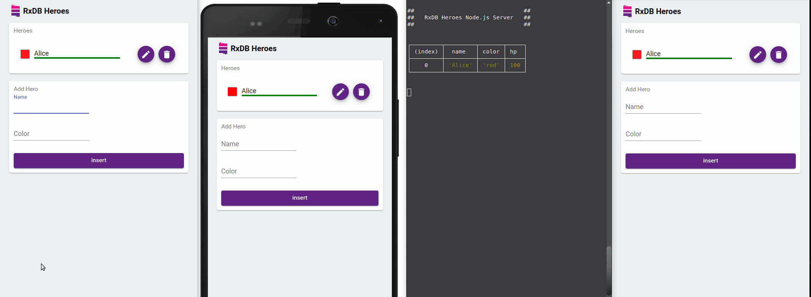

Offline First
Offline-First is a software paradigm where the software must work as well offline as it does online. To implement this, you have to store data at the client side, so that your application can still access it when the internet goes away. This can be either done with complex caching strategies, or by using an offline first database (like RxDB) that stores the data inside of IndexedDb and replicates it from and to the backend in the background. This makes the local database, not the server, the gateway for all persistent changes in application state.
Offline first is not about having no internet connection
While in the past, internet connection was an unstable, things are changing especially for mobile devices. Mobile networks become better and having no internet becomes less common even in remote locations. So if we did not care about offline first applications in the past, why should we even care now? In the following I will point out why offline first applications are better, not because they support offline usage, but because of other reasons.
UX is better without loading spinners
In 'normal' web applications, most user interactions like fetching, saving or deleting data, correspond to a request to the backend server. This means that each of these interactions require the user to await the unknown latency to and from a remote server while looking at a loading spinner. In offline-first apps, the operations go directly against the local storage which happens almost instantly. There is no perceptible loading time and so it is not even necessary to implement a loading spinner at all. As soon as the user clicks, the UI represents the new state as if it was already changed in the backend.
Multi-tab usage just works
Many, even big websites like amazon, reddit and stack overflow do not handle multi tab usage correctly. When a user has multiple tabs of the website open and does a login on one of these tabs, the state does not change on the other tabs. On offline first applications, there is always exactly one state of the data across all tabs. Offline first databases (like RxDB) store the data inside of IndexedDb and share the state between all tabs of the same origin.

Latency is more important than bandwidth
In the past, often the bandwidth was the limiting factor on determining the loading time of an application. But while bandwidth has improved over the years, latency became the limiting factor. You can always increase the bandwidth by setting up more cables or sending more Starlink satellites to space. But reducing the latency is not so easy. It is defined by the physical properties of the transfer medium, the speed of light and the distance to the server. All of these three are hard to optimize.
Offline first application benefit from that because sending the initial state to the client can be done much faster with more bandwidth. And once the data is there, we do no longer have to care about the latency to the backend server.
Realtime comes for free
Most websites lie to their users. They do not lie because they display wrong data, but because they display old data that was loaded from the backend at the time the user opened the site. To overcome this, you could build a realtime website where you create a websocket that streams updates from the backend to the client. This means work. Your client needs to tell the server which page is currently opened and which updates the client is interested to. Then the server can push updates over the websocket and you can update the UI accordingly.
With offline first applications, you already have a realtime replication with the backend. Most offline first databases provide some concept of changestream or data subscriptions and with RxDB you can even directly subscribe to query results or single fields of documents. This makes it easy to have an always updated UI whenever data on the backend changes.

Scales with data size, not with the amount of user interaction
On normal applications, each user interaction can result in multiple requests to the backend server which increase its load. The more users interact with your application, the more backend resources you have to provide.
Offline first applications do not scale up with the amount of user actions but instead they scale up with the amount of data. Once that data is transferred to the client, the user can do as many interactions with it as required without connecting to the server.
Modern apps have longer runtimes
In the past you used websites only for a short time. You open it, perform some action and then close it again. This made the first load time the important metric when evaluating page speed. Today web applications have changed and with it the way we use them. Single page applications are opened once and then used over the whole day. Chat apps, email clients, PWAs and hybrid apps. All of these were made to have long runtimes. This makes the time for user interactions more important than the initial loading time. Offline first applications benefit from that because there is often no loading time on user actions while loading the initial state to the client is not that relevant.
You might not need REST
On normal web applications, you make different requests for each kind of data interaction. For that you have to define a swagger route, implement a route handler on the backend and create some client code to send or fetch data from that route. The more complex your application becomes, the more REST routes you have to maintain and implement.
With offline first apps, you have a way to hack around all this cumbersome work. You just replicate the whole state from the server to the client. The replication does not only run once, you have a realtime replication and all changes at one side are automatically there on the other side. On the client, you can access every piece of state with a simple database query. While this of course only works for amounts of data that the client can load and store, it makes implementing prototypes and simple apps much faster.
You might not need Redux
Data is hard, especially for UI applications where many things can happen at the same time. The user is clicking around. Stuff is loaded from the server. All of these things interact with the global state of the app. To manage this complexity it is common to use state management libraries like Redux or MobX. With them, you write all this lasagna code to wrap the mutation of data and to make the UI react to all these changes.
On offline first apps, your global state is already there in a single place stored inside of the local database. You do not have to care whether this data came from the UI, another tab, the backend or another device of the same user. You can just make writes to the database and fetch data out of it.